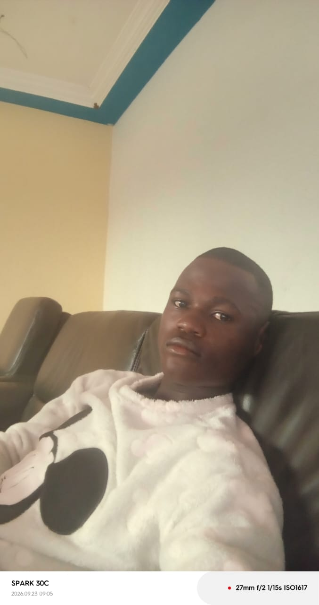

● Disponible pour un stage ou un premier posteDéveloppeur Web
Étudiant en Licence 3 GLSI à l’IAI-Togo, je conçois des API et des applications robustes avec Python, Django, FastAPI et Java, avec un fort intérêt pour l’intelligence artificielle.
Mes études, mon expérience et ce que je recherche.
Je recherche un stage stimulant pour appliquer et développer mes compétences en développement back-end, IA et gestion de projets.
Trois projets réalisés. Clique sur « Tester maintenant » pour les essayer ici, ou sur « Voir sur le globe » pour voir où ils ont été réalisés.
📍 Réalisé à Lomé, Togo
API REST de gestion et de sécurité aéroportuaire : vols, capacités des avions, passagers, fret, météo et géolocalisation des aéroports.
📍 Réalisé à Lomé, Togo
Outil de prédiction santé par intelligence artificielle, pour favoriser la détection précoce des maladies.
📍 Réalisé à Lomé, Togo
Système logiciel pour optimiser la gestion quotidienne d’un établissement de restauration.
Les langages et les outils que j’utilise.
Un stage, un projet, une question : écris-moi par le formulaire ou directement par email, LinkedIn et GitHub.
Télécharger mon CV